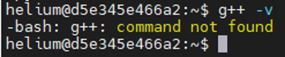
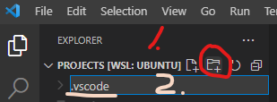
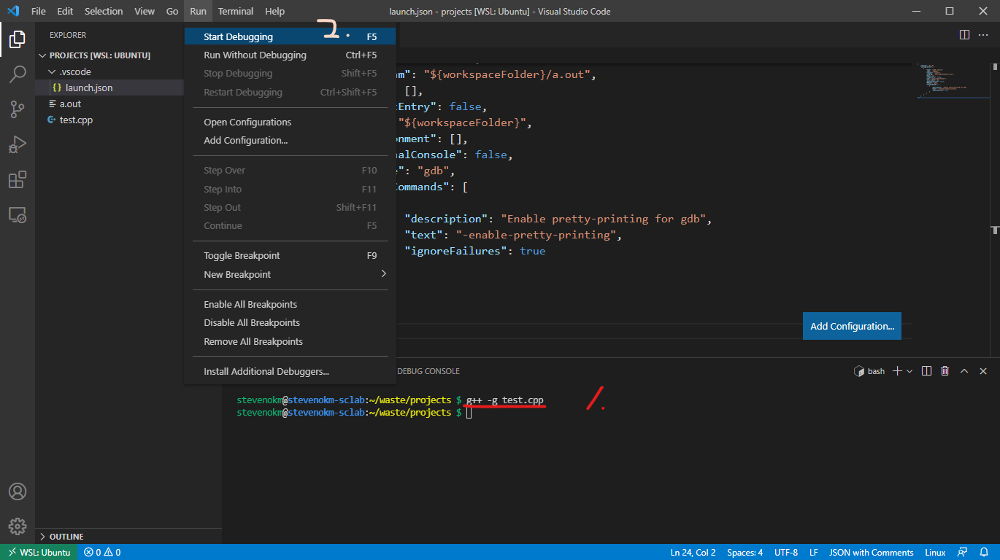
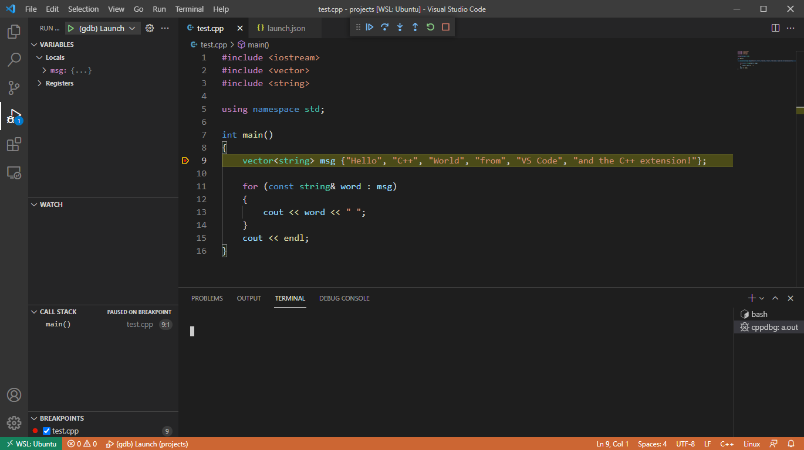
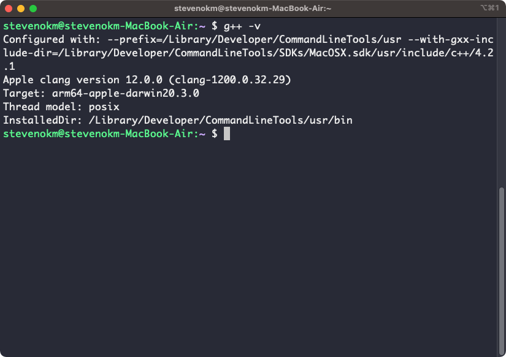
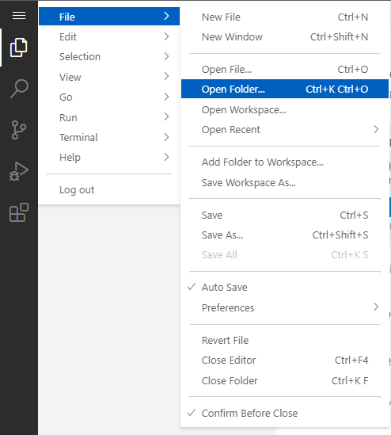
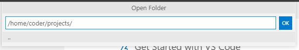
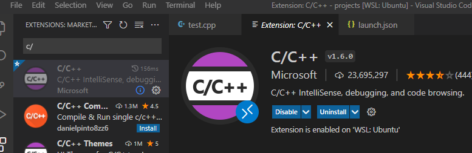
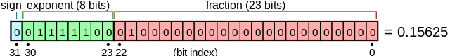

Course Introduction
課程說明 (Course Description)
本課程之內容包括：C/C++ 語言基礎語法、程式寫作技巧與觀念及實作範例。透過課堂解釋實作範例搭配作業練習各主題的語法或技巧。
The course will introduce the basics of C/C++ and the concepts and skills of programming. Each theme will be instructed with examples and hands-on labs in-class or off-class.
指定用書 (Text Books)
- S. Prata, C PRIMER PLUS (自由購買)
- 課程講義 (Lecture notes)
參考書籍 (References)
國立清華大學開放式課程OpenCourseWare(NTHU, OCW) - 計算機程式設計一(資工版)
Introduction to C++ | Electrical Engineering and Computer Science | MIT OpenCourseWare
Introduction to C and C++ | Electrical Engineering and Computer Science | MIT OpenCourseWare
教學方式 (Teaching Method)
透過講義解說各主題的實作技巧，由學生練習、測試與完成相關之課堂實作或作業。 課堂會採用實體及線上混合教學，學生可在滿足防疫規定下參加現場授課，同時於線上平台直播，同學也可同步於線上平台留言發問。 學生課後可透過 eeclass 討論區及預約時段與授課老師及助教討論。
The course will introduce each theme with lecture notes. Students will practice each theme with Homeworks and hands-on labs in-class or off-class. The course will hold both physically and online. Students can attend class physically under Taiwan CDC COVID-19 guideline. Also, the course will stream on online streaming platform(s). Students can discuss in real-time on the online streaming platform(s). After class, students can use the discussion forum in the NTHU eeclass or make a reservation with instructor or TA.
教學進度 (Syllabus)
(9/11 updated) 週次皆為暫定安排，會依實際授課情形調整。
| 週次 (Week) | 主題 (Theme) | |
|---|---|---|
| Week 2 | 程式設計 & C/C++ 語言基本概念 | Basic Concept of Programming |
| & C/C++ Language | ||
| 資料型態 & 格式化輸出與輸入(1) | Data Type & Formatted | |
| Input/Output(1) | ||
| Week 3 | 資料型態 & 格式化輸出與輸入(2) | Data Type & Formatted |
| Input/Output(2) | ||
| Week 4 | 資料型態 & 格式化輸出與輸入(3) | Data Type & Formatted |
| Input/Output(3) | ||
| 運算子與運算式 | Operator & expression | |
| Week 5 | 分支敘述 | Branch Statement |
| 迴圈敘述(1) | Loop Statement(1) | |
| Week 6 | 迴圈敘述(2) | Loop Statement(2) |
| Week 7 | 陣列與字串(1) | Array & String(1) |
| Week 8 | 陣列與字串(2) | Array & String(2) |
| Week 9 | 陣列與字串(3) | Array & String(3) |
| 位元處裡 | Bit manipulation | |
| Week 10 | 期中評量 | Midterm exam |
| Week 11 | 函式 & 參考(1) | Function & Reference(1) |
| Week 12 | 函式 & 參考(2) | Function & Reference(2) |
| Week 13 | 函式 & 參考(3) | Function & Reference(3) |
| Week 14 | 結構(1) | Structure(1) |
| Week 15 | 結構(2) | Structure(2) |
| 檔案 | File | |
| Week 16 | 記憶體管理 | Memory management |
| Week 17 | 前置處理器 | Preprocessor |
| 例外處裡 | Exception handling | |
| 除錯 & 斷言 | Debugging & assertion | |
| Week 18 | 期末評量 | Final exam |
成績考核 (Evaluation)
暫定，會依實際授課情形調整。 (Tentative, will change during the course)
學期成績 (Grade) ＝ 作業/實作 (Homework/Lab), 30% ＋ 期中考 (Midterm exam), 30% ＋ 期末考 (Final exam), 40 % + Bonus, 5%
相關網頁(Personal Website)
課程網頁 (Course website): https://stevenokm.github.io/i2p-nthu-math/i2p1
課程資訊
- 課程上課時間：每週四 15:30 - 18:10
- 前 1 - 1.5 小時講解今日主題
- 之後時間開放同學於現場或線上即時提問
- 課程上課地點：
- 綜三館 315 電腦教室 (座位47人，可出席人數 47 人，10/7更新)
- 實體上課出席登記: 程設實名紀錄 - Google 表單
- 實體上課出席座位表: 程式設計一 實體上課登記 - Google 雲端硬碟
- Youtube (Link: 上課錄影 - YouTube)
- Teams (團隊代碼: 0l2nz9s)
- 綜三館 315 電腦教室 (座位47人，可出席人數 47 人，10/7更新)
- 本課程開放加簽，原則上限制人數為 50 人，且參加實體課程需配合防疫規定。
- 請使用電子加簽系統加簽。
- 目前開放上限為本系大一生 47 人，並另有 10 人須審核加簽名額。
- 外系同學可線上加簽系統加選課程。
- 本課程有 Teams 團隊，需在申請完學校的 Office 365 帳號後即可使用連結加入，同學可多加利用團隊進行討論。
- 申請方式: Office 365 服務 (nthu.edu.tw)
- 外校同學可提供 office 365 帳號給助教協助加入團隊。
作業
- 每週作業會公布在課程網頁上，並使用 eeclass 平台繳交作業。
- eeclass 連結: https://eeclass.nthu.edu.tw/course/5088
- 作業會使用自動化工具檢查，若有批改上有問題可與助教詢問。
- 作業抄襲一律 0 分計算，並且不計入繳交次數。
- 作業須準時繳交，遲交則得到原始成績 80% 的分數。
期中 / 期末評量
- 期中 / 期末評量採斷網上機測試。
- 期中 / 期末評量會視疫情變化調整為其他方案。
- 參加期中 / 期末評量需繳交評量前所有作業，未完整繳交該次評量前作業的同學不得參加。
老師資訊
洪奕文 E-mail: s106062802@m106.nthu.edu.tw
Office Hours: Every Mon. 14:00 - 15:00
Office Room: R2341, 2F, EECS Building
Note: 若要來研究室詢問問題，請 一定要預約時間 ，臨時來研究室詢問 不保證 能夠當下開放詢問。 若要約 teams 詢問也可以約 Office Hour 時段詢問。
TA infos
許廷碩 E-mail: tim890727@gmail.com
TA Hours: TBA
上課實況/錄影檔
Youtube (Link: 上課錄影 - YouTube)
Bonus
課程內容如果有錯誤，可以在每頁的右上方 "Suggest an edit" 使用 Github 進行修改，修改完畢後利用 Pull Request 的方式提交。
提交時註明學號以及姓名，並且每提交一次可以增加學期分數，配分依據修改幅度而定，每人總增加分數不超過 5 分。
Visual Studio Code Tutorial
設定 VSCode 環境 (Linux)
安裝 GCC
打開 終端機 輸入以下指令：
sudo apt update
sudo apt install -y build-essential g++ gdb
g++ -v
Wrong:

Correct:

安裝 VSCode & C++ plugin
Install VSCode: https://code.visualstudio.com/docs/setup/linux
Install the C++ extension for VSCode: https://marketplace.visualstudio.com/items?itemName=ms-vscode.cpptools
新增專案 (Hello world!)
在 終端機 輸入以下指令：
$ mkdir projects
$ cd projects
$ code .
In VSCode: Exploer -> New File
輸入 test.cpp

在文字輸入區輸入以下程式碼
#include <iostream>
#include <vector>
#include <string>
using namespace std;
int main(void)
{
vector<string> msg {"Hello", "C++", "World", "from", "VS Code", "and the C++ extension!"};
for (const string& word : msg)
{
cout << word << " ";
}
cout << endl;
return 0;
}

編譯 & 執行 Hello world!
In VSCode: Terminal -> New Terminal

In VSCode Terminal:
$ g++ test.cpp
$ ./a.out
Hello C++ World from VS Code and the C++ extension!
$
Debugger
可以設置中斷點，方便程式除錯。
launch.json
In VSCode: Exploer -> New Folder
輸入 .vscode

In VSCode: Exploer -> New File
輸入 launch.json
在文字輸入區輸入以下設定檔
{
"version": "0.2.0",
"configurations": [
{
"name": "(gdb) Launch",
"type": "cppdbg",
"request": "launch",
"program": "${workspaceFolder}/a.out",
"args": [],
"stopAtEntry": false,
"cwd": "${workspaceFolder}",
"environment": [],
"externalConsole": false,
"MIMode": "gdb",
"setupCommands": [
{
"description": "Enable pretty-printing for gdb",
"text": "-enable-pretty-printing",
"ignoreFailures": true
}
]
}
]
}
編譯 & 執行 Debugger
In VSCode Terminal:
$ g++ -g test.cpp
$
插入中斷點
在要中斷的程式碼行號左邊點一下

In VSCode: Run -> Start Debugging F5


NOTE: 安裝完後可以在 File -> Oper Recent 開啟 WSL 的工作區 (後綴有 WSL:Ubuntu)
設定 VSCode 環境 (macOS)
安裝 g++
打開 終端機 輸入以下指令：
xcode-select --install
g++ -v
Wrong:
Correct:

安裝 VSCode & C++ plugin
Install VSCode: https://code.visualstudio.com/docs/setup/mac
Install the C++ extension for VSCode: https://marketplace.visualstudio.com/items?itemName=ms-vscode.cpptools
Note: 要加入 code 到環境變數 PATH 內。
- 打開 Command Palette (⌘ Shift P) 後輸入
shell command，就可以找到 Shell Command: Install 'code' command in PATH

- 重新啟動 終端機
新增專案 (Hello world!)
在 終端機 輸入以下指令：
$ mkdir projects
$ cd projects
$ code .
In VSCode: Exploer -> New File
輸入 test.cpp
在文字輸入區輸入以下程式碼
#include <iostream>
#include <vector>
#include <string>
using namespace std;
int main(void)
{
vector<string> msg {"Hello", "C++", "World", "from", "VS Code", "and the C++ extension!"};
for (const string& word : msg)
{
cout << word << " ";
}
cout << endl;
return 0;
}
settings.json
In VSCode: Exploer -> New Folder
輸入 .vscode
In VSCode: Exploer -> New File
輸入 settings.json

在文字輸入區輸入以下設定檔
{
"C_Cpp.default.cppStandard": "c++17"
}
編譯 & 執行 Hello world!
In VSCode: Terminal -> New Terminal
In VSCode Terminal:
$ g++ -std=c++17 -stdlib=libc++ test.cpp
$ ./a.out
Hello C++ World from VS Code and the C++ extension!
$
Debugger
可以設置中斷點，方便程式除錯。
安裝 CodeLLDB plugin
Install the CodeLLDB extension for VSCode: https://marketplace.visualstudio.com/items?itemName=vadimcn.vscode-lldb
launch.json
In VSCode:
選擇 .vscode
In VSCode: Exploer -> New File
輸入 launch.json
在文字輸入區輸入以下設定檔
{
"version": "0.2.0",
"configurations": [
{
"name": "(gdb) Launch",
"type": "lldb",
"request": "launch",
"program": "${workspaceFolder}/a.out",
"args": ["-arg1", "-arg2"],
"stopAtEntry": false,
"cwd": "${workspaceFolder}",
"environment": [],
"externalConsole": false,
"MIMode": "lldb",
"setupCommands": [
{
"description": "Enable pretty-printing for gdb",
"text": "-enable-pretty-printing",
"ignoreFailures": true
}
]
}
]
}
編譯 & 執行 Debugger
In VSCode Terminal:
$ g++ -std=c++17 -stdlib=libc++ -g test.cpp
$
插入中斷點
在要中斷的程式碼行號左邊點一下
In VSCode: Run -> Start Debugging F5
使用 VSCode server

安裝 GCC & C++ plugin
In VSCode: Terminal -> New Terminal

sudo apt update
sudo apt install -y build-essential g++ gdb
g++ -v
curl -L https://github.com/microsoft/vscode-cpptools/releases/download/1.5.1/cpptools-linux.vsix --output cpptools-linux.vsix
code-server --install-extension cpptools-linux.vsix
NOTE: 須重新整理網頁才能生效
新增專案 (Hello world!)
In VSCode: Exploer -> New Folder
輸入 projects

In VSCode: File -> Open Folder


In VSCode: Exploer -> New File
輸入 test.cpp
在文字輸入區輸入以下程式碼
#include <iostream>
#include <vector>
#include <string>
using namespace std;
int main()
{
vector<string> msg {"Hello", "C++", "World", "from", "VS Code", "and the C++ extension!"};
for (const string& word : msg)
{
cout << word << " ";
}
cout << endl;
}
編譯 & 執行 Hello world!
In VSCode Terminal:
$ g++ test.cpp
$ ./a.out
Hello C++ World from VS Code and the C++ extension!
$
Debugger
可以設置中斷點，方便程式除錯。
launch.json
In VSCode: Exploer -> New Folder
輸入 .vscode
In VSCode: Exploer -> New File
輸入 launch.json
在文字輸入區輸入以下設定檔
{
"version": "0.2.0",
"configurations": [
{
"name": "(gdb) Launch",
"type": "cppdbg",
"request": "launch",
"program": "${workspaceFolder}/a.out",
"args": [],
"stopAtEntry": false,
"cwd": "${workspaceFolder}",
"environment": [],
"externalConsole": false,
"MIMode": "gdb",
"setupCommands": [
{
"description": "Enable pretty-printing for gdb",
"text": "-enable-pretty-printing",
"ignoreFailures": true
}
]
}
]
}
編譯 & 執行 Debugger
In VSCode Terminal:
$ g++ -g test.cpp
$
插入中斷點
在要中斷的程式碼行號左邊點一下
In VSCode: Run -> Start Debugging F5
Reference:
- Get Started with C++ on Linux in Visual Studio Code
- Configure VS Code for Clang/LLVM on macOS
- Get Started with C++ and Windows Subsystem for Linux in Visual Studio Code
Visual Studio Code Tutorial (WSL/windows + mingw)
設定 VSCode 環境 (WSL)
NOTE: 安裝教學影片 WSL Tutorial
安裝 WSL & GCC
Install WSL: https://docs.microsoft.com/en-us/windows/wsl/install
啟動 WSL Ubuntu

在 WSL Ubuntu 輸入以下指令：
sudo apt update
sudo apt install -y build-essential g++ gdb
g++ -v
Wrong:
Correct:
安裝 VSCode & Remote - WSL plugin
Install VSCode: https://code.visualstudio.com/docs/setup/windows
Install the Remote - WSL extension for VSCode: https://marketplace.visualstudio.com/items?itemName=ms-vscode-remote.remote-wsl
新增專案 (Hello world!)
重新打開 WSL Ubuntu 並輸入以下指令：
$ mkdir projects
$ cd projects
$ code .
Correct:

安裝 WSL C++ plugin
Install the C++ extension for VSCode: https://marketplace.visualstudio.com/items?itemName=ms-vscode.cpptools
Correct:

In VSCode: Exploer -> New File
輸入 test.cpp
在文字輸入區輸入以下程式碼
#include <iostream>
#include <vector>
#include <string>
using namespace std;
int main()
{
vector<string> msg {"Hello", "C++", "World", "from", "VS Code", "and the C++ extension!"};
for (const string& word : msg)
{
cout << word << " ";
}
cout << endl;
}
編譯 & 執行 Hello world!
In VSCode: Terminal -> New Terminal
In VSCode Terminal:
$ g++ test.cpp
$ ./a.out
Hello C++ World from VS Code and the C++ extension!
$
Debugger
可以設置中斷點，方便程式除錯。
launch.json
In VSCode: Exploer -> New Folder
輸入 .vscode
In VSCode: Exploer -> New File
輸入 launch.json
在文字輸入區輸入以下設定檔
{
"version": "0.2.0",
"configurations": [
{
"name": "(gdb) Launch",
"type": "cppdbg",
"request": "launch",
"program": "${workspaceFolder}/a.out",
"args": [],
"stopAtEntry": false,
"cwd": "${workspaceFolder}",
"environment": [],
"externalConsole": false,
"MIMode": "gdb",
"setupCommands": [
{
"description": "Enable pretty-printing for gdb",
"text": "-enable-pretty-printing",
"ignoreFailures": true
}
]
}
]
}
編譯 & 執行 Debugger
In VSCode Terminal:
$ g++ -g test.cpp
$
插入中斷點
在要中斷的程式碼行號左邊點一下
In VSCode: Run -> Start Debugging F5
設定 VSCode 環境 (Windows + mingw)
Credit: CNOCycle/cpp_tutorial by E. Chen
安裝步驟
- 下載vscode-all-in-one.zip
- 解壓縮縮後，將檔案放到路徑
%USERPROFILE% - 將
%USERPROFILE%\mingw-w64\x86_64-8.1.0-posix-seh-rt_v6-rev0\mingw64\bin加入到環境變數Path - 完成
圖解說明
%USERPROFILE%是windows的環境變數，指的是該電腦使用者的目錄。 概念同linux底下的${HOME}。 以本台測試電腦為例，該電腦使用者為WDAGUtilityAccount，則%USERPROFILE%=C:\Users\WDAGUtilityAccount。 正常請況下在檔案總管上的路徑列輸入%USERPROFILE%後會自動跳轉。如下圖示範：

- 將檔案放到路徑
%USERPROFILE%，如下圖示範：

- 將
%USERPROFILE%\mingw-w64\x86_64-8.1.0-posix-seh-rt_v6-rev0\mingw64\bin加入到環境變數Path，如下圖示範：


測試編譯以及除錯
測試編譯
- 用
vscode編輯器選擇開啟解壓縮檔案裡面的test資料夾，如下圖示範：

NOTE: 如果電腦上沒有 test 資料夾，需要在 %USERPROFILE% 中新增一個資料夾，名稱可以自由取。
- 信任開啟檔案，選擇
Yes, I trust，如下圖示範：

- 點擊左方test.cpp檔案後，在第5行左側按下去，會出現紅點，如下圖示範：

- 按下
ctrl+shift+B按鍵，或上方terminal -> Run Build Task，如下圖示範：

- 此時上方會出現以下畫面，選擇中間選項使用 g++ 編譯檔案，如下圖示範：

- 設置正確的話，此時下方會出現編譯成功完成的提示，如下圖示範：

測試除錯
-
完成前項
測試編譯的所有流程 -
按下左方三角形按鈕後選擇
Run and Debug，如下圖示範：

- 此時上方會依序出現相關提示，選擇預設的即可，如下圖示範：


- 若設定正確的話，會看到程式停留在選取的第5行，如下圖示範：

Reference:
- CNOCycle/cpp_tutorial by E. Chen
- Get Started with C++ and Windows Subsystem for Linux in Visual Studio Code
- Get Started with C++ and Mingw-w64 in Visual Studio Code
Lecture 1-1: Introduction to Programming & C++
從 Source Code 到執行檔
 Credit: Computer Architecture by 黃婷婷老師
Credit: Computer Architecture by 黃婷婷老師
Text Editor
程式碼其實就是一般的純文字檔，為了能夠讓程式設計師有更好的效率撰寫程式，因此寫程式的編輯器會增加其他的功能輔助，例如自動縮排、關鍵字變色、甚至檢查語法錯誤等。
常見的程式編輯器有 Notepad++ 、 Atom 、 VS Code 等。
Compiler
是程式語言的核心工具，用來將你寫的 C/C++ 程式碼變成讓電腦能夠執行的指令。 此外還負責指令的最佳化，讓執行效率提升。
Linker
是用來將編譯好的指令連結成電腦能夠執行的執行檔。因為除了我們自己寫的程式碼之外，無可避免一定會用到許多已經編譯好的指令—— Library (函式庫)。
在現實的情況下，不可能每一東西都要靠自己創造，所以絕大多數的時候我們都會使用內建的或別人寫好的函式庫，來達到自己想要的功能。
Linker 就是用來把我們的程式碼和需要的函式庫裡的程式碼連結在一起，形成單一的可執行檔。
在 Windows 裡，執行的的副檔名為 .exe，macOS/Linux 則是給予執行權限即可執行。
Loader
是用來將執行檔載入給電腦，並實際讓電腦執行你的執行檔。
可以想像是在桌面上點兩下 .exe 檔案， Loader 概念與這個類似。
程式執行
所有的程式都是從指令列執行。 現在常見的圖形介面程式都是從指令列程式擴充而來的。
例如在桌面上點兩下 a.exe 檔案其實是告訴系統說 “請執行 a.exe”，系統會透過 Loader 將 a.exe 載入並且執行。
這時僅有指令列，如果要顯示圖形化介面， a.exe 需要加入其他函式庫告訴系統 “a.exe 有圖形化介面，內容分別是...”。
$ firefox
.......
.......
^C
$
C++ 語言架構
// import std::cout & std::endl
#include <iostream>
/*
start of define main function
void: no input arguments
int: return value in int type
*/
int main(void){
// print "Hello world!" on the terminal
std::cout << "Hello world!" << std::endl;
// return execute status back to the system
// `0` means the program executed successfully
return 0;
// end of define main function
}
$ ./a.out
Hello world!
$
#include <iostream>
int main(void){} & return 0;
std::cout & <<
std::endl
return 0;
Reference:
Lecture 1-2: Data Type & Formatted Input/Output (1)
變數 & 格式化輸出
// import std::cout & std::endl
#include <iostream>
// start of define main function
// void: no input arguments
// int: return value in int type
int main(void){
// define variable `year`, `month`, and `day`
// and assign value with `2021`, `9`, and `23`
int year = 2021, month = 9, day = 23;
// print "Hello world!" and today's date on the terminal
std::cout << "Hello world!"
<< std::endl
<< "Today is "
<< year << "/"
<< month << "/"
<< day << "."
<< std::endl;
return 0;
}
$ ./a.out
Hello world!
Today is 2021/9/23.
$
int year = 2021, month = 9, day = 23;
變數命名規則
std::cout << year;
從鍵盤讀取: std::cin
#include <iostream>
int main(void){
int input_number = 0;
std::cin >> input_number;
std::cout << "Hello world! "
<< input_number
<< std::endl;
return 0;
}
std::cin >> input_number;
數字運算
#include <iostream>
int main(void){
int a = 0, b = 0, c = 0;
std::cout << "input a:";
std::cin >> a;
std::cout << "input b:";
std::cin >> b;
c = a + b;
std::cout << "a: " << a << std::endl
<< "b: " << b << std::endl
<< "a + b = " << c << std::endl;
return 0;
}
c = a + b;
Reference:
Lab 1-1: Hello World (1)
Helloworld 的範例程式碼
#include <iostream>
int main(void){
std::cout << "Hello world!" << std::endl;
return 0;
}
互動式顯示 Hello world! <your student id> (50%)
- 輸入：學生學號
- 輸出：Hello world 文字及學生學號
- 檔名：lab1_1_<學號>.cpp (e.g. lab1_1_106062802.cpp)
程式需提示使用者輸入學號，程式需輸出 Hello world! 以及使用者輸入的學號。
$ ./a.out
Your student ID: <your student id>
Hello world! student <your student id>
$ ./a.out
Your student ID: 106062802
Hello world! student 106062802
Lab 1-2: Hello World (2)
每週工時計算 (50%)
- 輸入：一位員工的每週工作日數、該員工該週每天的工作時數
- 輸出：該員工每週的工時
- 檔名：lab1_2_<學號>.cpp (e.g. lab1_2_106062802.cpp)
程式需提示使用者輸入一位員工的每週工作日數、該員工該週每天的工作時數 (假設每天皆相同)，程式需輸出該員工每週的工時。
$ ./a.out
Employee workdays per week: <workdays/week>
Employee working hours per workday: <working hours/workday>
Employee works <working hours/week> hour(s) per week.
$ ./a.out
Employee workdays per week: 6
Employee working hours per workday: 12
Employee works 72 hour(s) per week.
Lecture 2: Data Type & Formatted Input/Output (2)
細部拆解一個 C++ 程式碼
Debugger 逐行解釋
#include <iostream>
int main(void)
{
int a = 0, b = 0, c = 0;
std::cout << "input a:";
std::cin >> a;
std::cout << "input b:";
std::cin >> b;
c = a + b;
std::cout << "a: " << a << std::endl
<< "b: " << b << std::endl
<< "a + b = " << c << std::endl;
return 0;
}
為何要寫 #include <> ?
Include 了許多已經先寫好的 function，有些是跟系統有關，我們看不到原始碼的，我們只要拿來用就好。
可以打開 /usr/include/c++/9/iostream 看原始碼。
為何 int main(void) ?
main 的定義
int main () { body }int main (int argc, char *argv[]) { body }
The main function is called at program startup after initialization of the non-local objects with static storage duration. It is the designated entry point to a program that is executed in hosted environment (that is, with an operating system). The entry points to freestanding programs (boot loaders, OS kernels, etc) are implementation-defined.
Another example:
#include <iostream>
#include <sstream>
int main(int argc, char *argv[])
{
int a = 0, b = 0, c = 0;
std::stringstream char_array_to_int;
std::cout << argc << std::endl;
char_array_to_int << argv[1] << ' ' << argv[2];
char_array_to_int >> a;
char_array_to_int >> b;
c = a + b;
std::cout << "a: " << a << std::endl
<< "b: " << b << std::endl
<< "a + b = " << c << std::endl;
return 0;
}
Coding Style & 變數名稱規則
好的 coding style 很重要
Bad example:
#include <iostream>
#include <sstream>
int main(int argc, char *argv[]){int a = 0, b = 0, c = 0;std::stringstream char_array_to_int;std::cout << argc << std::endl;char_array_to_int << argv[1] << ' ' << argv[2];char_array_to_int >> a;char_array_to_int >> b;c = a + b;std::cout << "a: " << a << std::endl << "b: " << b << std::endl << "a + b = " << c << std::endl;return 0;}
intend & spacing
Bad example:
#include <iostream>
#include <sstream>
int main(int argc, char *argv[]){int a = 0, b = 0, c = 0;
std::stringstream char_array_to_int;
std::cout<<argc<<std::endl;
char_array_to_int<<argv[1]<<' '<<argv[2];
char_array_to_int>>a;
char_array_to_int>>b;
c=a+b;
std::cout<<"a: "<<a<<std::endl
<< "b: " << b << std::endl
<< "a + b = "<< c << std::endl;
return 0;
}
fomatter
In vscode:
- Windows: Shift Alt F
- macOS: Shift Option F
- Linux: Ctrl Shift I
Demo
變數名稱規則
GNU
#include <iostream>
#include <sstream>
int main(int argc, char *argv[])
{
int a = 0, b = 0, c = 0;
std::stringstream char_array_to_int;
std::cout << argc << std::endl;
char_array_to_int << argv[1] << ' ' << argv[2];
char_array_to_int >> a;
char_array_to_int >> b;
c = a + b;
std::cout << "a: " << a << std::endl
<< "b: " << b << std::endl
<< "a + b = " << c << std::endl;
return 0;
}
Hungarian notation
#include <iostream>
#include <sstream>
int main(int argc, char *argv[])
{
int a = 0, b = 0, c = 0;
std::stringstream charArrayToInt;
std::cout << argc << std::endl;
charArrayToInt << argv[1] << ' ' << argv[2];
charArrayToInt >> a;
charArrayToInt >> b;
c = a + b;
std::cout << "a: " << a << std::endl
<< "b: " << b << std::endl
<< "a + b = " << c << std::endl;
return 0;
}
變數格式 & 型態轉換
int, long, long long
| Type | Size in bits | Format | Value range |
|---|---|---|---|
| int | 16 | signed | $$-32768$$ to $$32767$$ |
| unsigned | $$0$$ to $$65535$$ | ||
| long | 32 | signed | $$-2,147,483,648$$ to $$2,147,483,647$$ |
| unsigned | $$0$$ to $$4,294,967,295$$ | ||
| long long | 64 | signed | $$-9,223,372,036,854,775,808$$ to |
| $$9,223,372,036,854,775,807$$ | |||
| unsigned | $$0$$ to $$18,446,744,073,709,551,615$$ |
unsigned int & overflow
#include <iostream>
int main(void)
{
int i = 2147483647;
unsigned int j = 4294967295U;
std::cout << i << ' ' << i + 1 << ' ' << i + 2 << std::endl;
std::cout << j << ' ' << j + 1 << ' ' << j + 2 << std::endl;
return 0;
}
float, double, double double
| Type | Size in bits | Format | Value range |
|---|---|---|---|
| float | 32 | IEEE-754 | min subnormal: $$\pm 1.401,298,4 * 10^{-45}$$ |
| min normal: $$\pm 1.175,494,3 * 10^{-38}$$ | |||
| max: $$\pm 3.402,823,4 * 10^{38}$$ | |||
| double | 64 | IEEE-754 | min subnormal: $$\pm 4.940,656,458,412 * 10^{-324}$$ |
| min normal: $$\pm 2.225,073,858,507,201,4 * 10^{-308}$$ | |||
| max: $$\pm 1.797,693,134,862,315,7 * 10^{308}$$ | |||
| long doulbe | 80 | x86 | min subnormal: $$\pm 3.645,199,531,882,474,602,528 * 10^{-4951}$$ |
| min normal: $$\pm 3.362,103,143,112,093,506,263 * 10^{-4932}$$ | |||
| max: $$\pm 1.189,731,495,357,231,765,021 * 10^{4932}$$ | |||
| __float128 | 128 | IEEE-754 | min subnormal: $$\pm 6.475,175,119,438,025,110,924,438,958,227,646,552,5 * 10^{-4966}$$ |
| min normal: $$\pm 3.362,103,143,112,093,506,262,677,817,321,752,602,6 * 10^{-4932}$$ | |||
| max: $$\pm 1.189,731,495,357,231,765,085,759,326,628,007,016,2 * 10^{4932}$$ |
floating point precision
#include <iostream>
#include <iomanip>
int main(void)
{
float x = 1.23456789;
std::cout << std::setprecision(3) << x << std::endl;
std::cout << std::setprecision(4) << x << std::endl;
std::cout << std::fixed;
std::cout << std::setprecision(5) << x << std::endl;
std::cout << std::setprecision(9) << x << std::endl;
return 0;
}
cast
#include <iostream>
int main(void)
{
double f = 3.14;
unsigned int n1 = (unsigned int)f; // C-style cast
std::cout << f << std::endl;
std::cout << n1 << std::endl;
return 0;
}
char
| Type | Size in bits | Format | Value range |
|---|---|---|---|
| character | 8 | signed | $$-128$$ to $$127$$ |
| unsigned | $$0$$ to $$255$$ | ||
| 16 | UTF-16 | $$0$$ to $$65535$$ | |
| 32 | UTF-32 | $$0$$ to $$1,114,111$$ (0x10ffff) |
ASCII
Hex = Hexdecimal Value, Char = Character
| Hex | Char | Hex | Char | Hex | Char | Hex | Char |
|---|---|---|---|---|---|---|---|
| 0 | NUL (null) | 20 | SPACE | 40 | @ | 60 | ` |
| 1 | SOH (start of heading) | 21 | ! | 41 | A | 61 | a |
| 2 | STX (start of text) | 22 | " \" | 42 | B | 62 | b |
| 3 | ETX (end of text) | 23 | # | 43 | C | 63 | c |
| 4 | EOT (end of transmission) | 24 | $ | 44 | D | 64 | d |
| 5 | ENQ (enquiry) | 25 | % | 45 | E | 65 | e |
| 6 | ACK (acknowledge) | 26 | & | 46 | F | 66 | f |
| 7 | BEL (bell \a) | 27 | ' \' | 47 | G | 67 | g |
| 8 | BS (backspace \b) | 28 | ( | 48 | H | 68 | h |
| 9 | TAB (horizontal tab \t) | 29 | ) | 49 | I | 69 | i |
| A | LF (NL line feed, new line \n) | 2A | * | 4A | J | 6A | j |
| B | VT (vertical tab \v) | 2B | + | 4B | K | 6B | k |
| C | FF (NP form feed, new page \f) | 2C | , | 4C | L | 6C | l |
| D | CR (carriage return \r) | 2D | - | 4D | M | 6D | m |
| E | SO (shift out) | 2E | . | 4E | N | 6E | n |
| F | SI (shift in) | 2F | / | 4F | O | 6F | o |
| 10 | DLE (data link escape) | 30 | 0 | 50 | P | 70 | p |
| 11 | DC1 (device control 1) | 31 | 1 | 51 | Q | 71 | q |
| 12 | DC2 (device control 2) | 32 | 2 | 52 | R | 72 | r |
| 13 | DC3 (device control 3) | 33 | 3 | 53 | S | 73 | s |
| 14 | DC4 (device control 4) | 34 | 4 | 54 | T | 74 | t |
| 15 | NAK (negative acknowledge) | 35 | 5 | 55 | U | 75 | u |
| 16 | SYN (synchronous idle) | 36 | 6 | 56 | V | 76 | v |
| 17 | ETB (end of trans. block) | 37 | 7 | 57 | W | 77 | w |
| 18 | CAN (cancel) | 38 | 8 | 58 | X | 78 | x |
| 19 | EM (end of medium) | 39 | 9 | 59 | Y | 79 | y |
| 1A | SUB (substitute) | 3A | : | 5A | Z | 7A | z |
| 1B | ESC (escape \e) | 3B | ; | 5B | [ | 7B | { |
| 1C | FS (file separator) | 3C | < | 5C | \ \\ | 7C | | |
| 1D | GS (group separator) | 3D | = | 5D | ] | 7D | } |
| 1E | RS (record separator) | 3E | > | 5E | ^ | 7E | ~ |
| 1F | US (unit separator) | 3F | ? \? | 5F | _ | 7F | DEL |
#include <iostream>
int main(void)
{
char char_five = '5'; // char_five = 53
char char_diff = '5' - '0'; // char_diff = 53-48 = 5
char c = 'B' + 32; // c = 98 = 'b'
std::cout << char_five << std::endl;
std::cout << (int)char_five << std::endl;
std::cout << (int)char_diff << std::endl;
std::cout << c << std::endl;
return 0;
}
others
UTF-8, UTF-16, Big5, Shift_JIS, etc.
Reference:
- htchen/i2p-nthu by 陳煥宗老師
- Main function - cppreference.com
- 【VSCode】如何在 VSCode 上自定義 C++ 的 coding style | by Zam Huang | Medium
- Naming convention (programming) - Wikipedia
- GNU Coding Standards
- Fundamental types - cppreference.com
- setprecision - C++ Reference
- Explicit type conversion - cppreference.com
- ASCII Table
- What is a buffer in C?
Lab 2: 正實數加/乘法器
Lab 2-1: 正實數顯示 (30%)
- 輸入：正實數的整數部分、正實數的小數部分 (1/1,000,000)，正實數的小數部分不超過 6 位數。
- 輸出：該正實數，並且以
float形式輸出。 - 檔名：lab2_1_<學號>.cpp (e.g. lab2_1_106062802.cpp)
程式需提示使用者輸入正實數的整數部分、正實數的小數部分，程式需輸出該正實數。
Input real number, before decimal point: <before decimal point>
Input real number, after decimal point: <after decimal point>
The real number is: <output real number>
Example:
$ ./a.out
Input real number, before decimal point: 123
Input real number, after decimal point: 456000
The real number is: 123.456
$ ./a.out
Input real number, before decimal point: 654321
Input real number, after decimal point: 0
The real number is: 654321
$ ./a.out
Input real number, before decimal point: 123
Input real number, after decimal point: 456
The real number is: 123
Lab 2-2: 正實數加法 (30%)
- 輸入：兩正實數的整數部分、正實數的小數部分 (1/1,000,000)，正實數的小數部分不超過 6 位數。
- 輸出：兩正實數數值、兩正實數的和，並且以
double形式搭配std::fixed輸出。 - 檔名：lab2_2_<學號>.cpp (e.g. lab2_2_106062802.cpp)
程式需提示使用者輸入兩正實數的整數部分、正實數的小數部分，程式需輸出兩正實數數值、兩正實數的和。
Input real number (a), before decimal point: <(a) before decimal point>
Input real number (a), after decimal point: <(a) after decimal point>
The real number (a) is: <real number (a)>
Input real number (b), before decimal point: <(b) before decimal point>
Input real number (b), after decimal point: <(b) after decimal point>
The real number (b) is: <real number (b)>
(a) + (b) = <real number (a) + (b)>
Example:
$ ./a.out
Input real number (a), before decimal point: 1
Input real number (a), after decimal point: 234560
The real number (a) is: 1.234560
Input real number (b), before decimal point: 12345
Input real number (b), after decimal point: 6
The real number (b) is: 12345.000006
(a) + (b) = 12346.234566
Lab 2-3: 正實數乘法 (20%)
- 輸入：兩正實數的整數部分、正實數的小數部分 (1/10,000,000,000)，正實數的小數部分不超過 10 位數。
- 輸出：兩正實數數值、兩正實數的積，並且以
double形式搭配std::setprecision(15)輸出。 - 檔名：lab2_3_<學號>.cpp (e.g. lab2_3_106062802.cpp)
程式需提示使用者輸入兩正實數的整數部分、正實數的小數部分，程式需輸出兩正實數數值、兩正實數的積。
Input real number (a), before decimal point: <(a) before decimal point>
Input real number (a), after decimal point: <(a) after decimal point>
The real number (a) is: <real number (a)>
Input real number (b), before decimal point: <(b) before decimal point>
Input real number (b), after decimal point: <(b) after decimal point>
The real number (b) is: <real number (b)>
(a) * (b) = <real number (a) * (b)>
Example:
$ ./a.out
Input real number (a), before decimal point: 1
Input real number (a), after decimal point: 2000000000
The real number (a) is: 1.2
Input real number (b), before decimal point: 12
Input real number (b), after decimal point: 3000000000
The real number (b) is: 12.3
(a) * (b) = 14.76
$ ./a.out
Input real number (a), before decimal point: 1
Input real number (a), after decimal point: 2000000000
The real number (a) is: 1.2
Input real number (b), before decimal point: 12
Input real number (b), after decimal point: 3
The real number (b) is: 12.0000000003
(a) * (b) = 14.40000000036
Lab 2-4: 大正實數加法 (10%)
- 輸入：兩正實數的整數部分、正實數的小數部分 (1/1,000,000,000,000,000,000)，整數及小數各不超過 18 位數字
- 輸出：兩正實數數值、兩正實數的和，整數不超過 19 位數字，小數部分固定顯示 18 位。
- 檔名：lab2_4_<學號>.cpp (e.g. lab2_4_106062802.cpp)
程式需提示使用者輸入兩正實數的整數部分、正實數的小數部分，程式需輸出兩正實數數值、兩正實數的和。
Input real number (a), before decimal point: <(a) before decimal point>
Input real number (a), after decimal point: <(a) after decimal point>
The real number (a) is: <real number (a)>
Input real number (b), before decimal point: <(b) before decimal point>
Input real number (b), after decimal point: <(b) after decimal point>
The real number (b) is: <real number (b)>
(a) + (b) = <real number (a) + (b)>
Example:
$ ./a.out
Input real number (a), before decimal point: 123456789012345678
Input real number (a), after decimal point: 123456789012345678
The real number (a) is: 123456789012345678.123456789012345678
Input real number (b), before decimal point: 987654321098765432
Input real number (b), after decimal point: 987654321098765432
The real number (b) is: 987654321098765432.987654321098765432
(a) + (b) = 1111111110111111111.111111110111111110
$ ./a.out
Input real number (a), before decimal point: 1
Input real number (a), after decimal point: 1
The real number (a) is: 1.000000000000000001
Input real number (b), before decimal point: 2
Input real number (b), after decimal point: 2
The real number (b) is: 2.000000000000000002
(a) + (b) = 3.000000000000000003
Reference:
Lab 2-5: 大正實數乘法 (10%)
- 輸入：兩正實數的整數部分、正實數的小數部分 (1/1,000,000,000)，整數及小數各不超過 9 位數字
- 輸出：兩正實數數值、兩正實數的積，整數及小數各不超過 18 位數字，小數部分固定顯示 18 位。
- 檔名：lab2_5_<學號>.cpp (e.g. lab2_5_106062802.cpp)
程式需提示使用者輸入兩正實數的整數部分、正實數的小數部分，程式需輸出兩正實數數值、兩正實數的積。
Input real number (a), before decimal point: <(a) before decimal point>
Input real number (a), after decimal point: <(a) after decimal point>
The real number (a) is: <real number (a)>
Input real number (b), before decimal point: <(b) before decimal point>
Input real number (b), after decimal point: <(b) after decimal point>
The real number (b) is: <real number (b)>
(a) * (b) = <real number (a) * (b)>
Example:
$ ./a.out
Input real number (a), before decimal point: 123456789
Input real number (a), after decimal point: 123456789
The real number (a) is: 123456789.123456789000000000
Input real number (b), before decimal point: 987654321
Input real number (b), after decimal point: 987654321
The real number (b) is: 987654321.987654321000000000
(a) * (b) = 121932631356500531.347203169112635269
$ ./a.out
Input real number (a), before decimal point: 1
Input real number (a), after decimal point: 1
The real number (a) is: 1.000000001000000000
Input real number (b), before decimal point: 2
Input real number (b), after decimal point: 2
The real number (b) is: 2.000000002000000000
(a) * (b) = 2.000000004000000002
Reference:
Lecture 3-1: Data Type & Formatted Input/Output (3)
Radix
- Binary
0b0,0b1 - Octal:
00~07 - Decimal:
0~9 - Hexdecimal:
0x0~0xf
example:
int d = 42;
int o = 052;
int x = 0x2a;
int X = 0X2A;
int b = 0b101010; // C++14
setfill & setw
setfill
#include <iostream>
#include <iomanip> // include IO Manipulators
int main()
{
std::cout << "default fill: [" << std::setw(10) << 42 << "]\n"
<< "setfill('*'): [" << std::setfill('*')
<< std::setw(10) << 42 << "]\n";
}
output
$ ./a.out
default fill: [ 42]
setfill('*'): [********42]
$
setw
#include <iostream>
#include <iomanip>
int main()
{
std::cout << "no setw: [" << 42 << "]\n"
<< "setw(6): [" << std::setw(6) << 42 << "]\n"
<< "setw(6), several elements: [" << 89 << std::setw(6) << 12 << 34 << "]\n";
}
$ ./a.out
no setw: [42]
setw(6): [ 42]
setw(6), several elements: [89 1234]
$
scientific representation
format: 10-based
1.234567e-10-1.234567e+10
std::scientific, std::fixed
#include <iostream>
#include <iomanip>
enum class cap
{
title,
middle,
end
};
void print(const char *text, double num, cap c)
{
if (c == cap::title)
std::cout << "┌──────────┬────────────┬──────────────────────────┐\n"
"│ number │ iomanip │ representation │\n"
"├──────────┼────────────┼──────────────────────────┤\n";
std::cout << std::left
<< "│ " << std::setw(8) << text << " │ fixed │ "
<< std::setw(24) << std::fixed << num << " │\n"
<< "│ " << std::setw(8) << text << " │ scientific │ "
<< std::setw(24) << std::scientific << num << " │\n"
<< "│ " << std::setw(8) << text << " │ default │ "
<< std::setw(24) << std::defaultfloat << num << " │\n";
std::cout << (c != cap::end ? "├──────────┼────────────┼──────────────────────────┤\n" : "└──────────┴────────────┴──────────────────────────┘\n");
}
int main()
{
print("0.0", 0.0, cap::title);
print("0.01", 0.01, cap::middle);
print("0.00001", 0.00001, cap::end);
}
$ ./a.out
┌──────────┬────────────┬──────────────────────────┐
│ number │ iomanip │ representation │
├──────────┼────────────┼──────────────────────────┤
│ 0.0 │ fixed │ 0.000000 │
│ 0.0 │ scientific │ 0.000000e+00 │
│ 0.0 │ default │ 0 │
├──────────┼────────────┼──────────────────────────┤
│ 0.01 │ fixed │ 0.010000 │
│ 0.01 │ scientific │ 1.000000e-02 │
│ 0.01 │ default │ 0.01 │
├──────────┼────────────┼──────────────────────────┤
│ 0.00001 │ fixed │ 0.000010 │
│ 0.00001 │ scientific │ 1.000000e-05 │
│ 0.00001 │ default │ 1e-05 │
└──────────┴────────────┴──────────────────────────┘
$
pow(base, exponent)
計算 $${base}^{exponment}$$
#include <iostream>
#include <cmath> // include cmath for std::pow
int main()
{
// typical usage
std::cout << "pow(2, 10) = " << std::pow(2, 10) << '\n'
<< "pow(2, 0.5) = " << std::pow(2, 0.5) << '\n'
<< "pow(-2, -3) = " << std::pow(-2, -3) << '\n';
}
$ ./a.out
pow(2, 10) = 1024
pow(2, 0.5) = 1.41421
pow(-2, -3) = -0.125
$
I/O Buffer & 控制字元(Escape Character)
I/O Buffer
當你使用 std::cout 把資料顯示到螢幕上時，其實並不會立即顯示在螢幕上，而是先送到所謂的 buffer 裡。
要等到下列幾種情況才會做 flushing the buffer 的動作，把 buffer 裡的資料沖到螢幕上：
- 當 buffer 滿的時候
- 當
\n字元出現的時候 - 當接下來是做輸入的動作的時候 (譬如遇到
std::cin)。 有時候為了讓資料能立刻顯示到螢幕上，可以用 fflush() 強迫把 buffer 裡的東西送出。 當你發現有時候輸入或輸出的顯示順序會亂掉，可以試著在std::cout之後用std::flush來確保資料不會被卡在 buffer 裡。
#include <iostream>
int main(int argc, char *argv[])
{
int a = 0, b = 0, c = '\n';
std::cout << "a: "
<< a
//<< std::flush
<< "b: "
<< b
//<< std::flush
<< "a + b = "
<< c
<< std::endl;
return 0;
}
控制字元(Escape Character)
In ASCII: 0 ... 1F, 7F
#include <iostream>
int main(int argc, char *argv[])
{
char a = 'c', b = '\010', c = 'a';
std::cout << "a: "
<< a
<< "b: "
<< b
<< "c: "
<< c
<< std::endl;
return 0;
}
bool
#include <iostream>
int main()
{
std::cout << std::boolalpha
<< true << '\n'
<< false << '\n'
<< std::noboolalpha
<< true << '\n'
<< false << '\n';
}
$ ./a.out
true
false
1
0
$
NOTE: 會在 tarnary operator ? : 使用
Reference:
- htchen/i2p-nthu by 陳煥宗老師
- Integer literal - cppreference.com
- std::setfill - cppreference.com
- std::setw - cppreference.com
- std::fixed, std::scientific, std::hexfloat, std::defaultfloat - cppreference.com
- std::pow, std::powf, std::powl - cppreference.com
- ASCII Table
- What is a buffer in C?
- Boolean literals - cppreference.com
Lecture 3-2: Operator & expression (1)
operators & priority
increment & decrement
| opeartor | syntax |
|---|---|
| pre-increment | ++a |
| pre-decrement | --a |
| post-increment | a++ |
| post-decrement | a-- |
#include <iostream>
int main()
{
int n1 = 1;
int n2 = ++n1;
int n3 = ++++n1;
int n4 = n1++;
//int n5 = n1++ ++; // error
//int n6 = n1 + ++n1; // undefined behavior
std::cout << "n1 = " << n1 << '\n'
<< "n2 = " << n2 << '\n'
<< "n3 = " << n3 << '\n'
<< "n4 = " << n4 << '\n';
}
NOTE: demo with debugger
$ ./a.out
n1 = 5
n2 = 2
n3 = 4
n4 = 4
$
arithmic operators
| opeartor | syntax |
|---|---|
| unary plus | +a |
| unary minus | -a |
| addition | a + b |
| subtraction | a - b |
| multiplication | a * b |
| division | a / b |
| modulo | a % b |
+a & -a
#include <iostream>
int main()
{
char c = 0x6a;
int n1 = 1;
unsigned char n2 = 1;
unsigned int n3 = 1;
std::cout << "char: " << c << " int: " << +c << '\n'
<< "-1, where 1 is signed: " << -n1 << '\n'
<< "-1, where 1 is unsigned char: " << -n2 << '\n'
<< "-1, where 1 is unsigned int: " << -n3 << '\n';
}
$ ./a.out
char: j int: 106
-1, where 1 is signed: -1
-1, where 1 is unsigned char: -1
-1, where 1 is unsigned int: 4294967295
$
a % b
#include <iostream>
int main()
{
char c = 2;
unsigned int un = 2;
int n = -10;
std::cout << "2 * (-10), where 2 is a char = " << c * n << '\n'
<< "2 * (-10), where 2 is unsigned = " << un * n << '\n'
<< "-10 / 2.12 = " << n / 2.12 << '\n'
<< "-10 / 21 = " << n / 21 << '\n'
<< "-10 % 21 = " << n % 21 << '\n';
}
$ ./a.out
2 * (-10), where 2 is a char = -20
2 * (-10), where 2 is unsigned = 4294967276
-10 / 2.12 = -4.71698
-10 / 21 = 0
-10 % 21 = -10
$
bitwise operator
| opeartor | syntax |
|---|---|
| bitwise NOT | ~a |
| bitwise AND | a & b |
| bitwise OR | a \| b |
| bitwise XOR | a ^ b |
| bitwise left shift | a << b |
| bitwise right shift | a >> b |
~a, a & b, a | b, a ^ b
Truth table:
a = 0 | a = 1 | |
|---|---|---|
~a | 1 | 0 |
a & b | a = 0 | a = 1 |
|---|---|---|
b = 0 | 0 | 0 |
b = 1 | 0 | 1 |
a \| b | a = 0 | a = 1 |
|---|---|---|
b = 0 | 0 | 1 |
b = 1 | 1 | 1 |
a ^ b | a = 0 | a = 1 |
|---|---|---|
b = 0 | 0 | 1 |
b = 1 | 1 | 0 |
#include <iostream>
#include <iomanip>
#include <bitset> // include for display binary number
int main()
{
uint16_t mask = 0x00f0;
uint32_t x0 = 0x12345678;
uint32_t x1 = x0 | mask;
uint32_t x2 = x0 & ~mask;
uint32_t x3 = x0 & mask;
uint32_t x4 = x0 ^ mask;
uint32_t x5 = ~x0;
using bin16 = std::bitset<16>; // display in 16-bit width binary number
using bin32 = std::bitset<32>; // display in 32-bit width binary number
std::cout << std::hex << std::showbase // show in hexdecemal with base number (0x)
<< "Mask: " << mask << std::setw(49) << bin16(mask) << '\n'
<< "Value: " << x0 << std::setw(42) << bin32(x0) << '\n'
<< "Setting bits: " << x1 << std::setw(35) << bin32(x1) << '\n'
<< "Clearing bits: " << x2 << std::setw(34) << bin32(x2) << '\n'
<< "Selecting bits: " << x3 << std::setw(39) << bin32(x3) << '\n'
<< "XOR-ing bits: " << x4 << std::setw(35) << bin32(x4) << '\n'
<< "Inverting bits: " << x5 << std::setw(33) << bin32(x5) << '\n';
}
$ ./a.out
Mask: 0xf0 0000000011110000
Value: 0x12345678 00010010001101000101011001111000
Setting bits: 0x123456f8 00010010001101000101011011111000
Clearing bits: 0x12345608 00010010001101000101011000001000
Selecting bits: 0x70 00000000000000000000000001110000
XOR-ing bits: 0x12345688 00010010001101000101011010001000
Inverting bits: 0xedcba987 11101101110010111010100110000111
$
a >> b & a << b
#include <iostream>
int main()
{
std::cout << std::hex << std::showbase;
char c = 0x10;
unsigned long long ull = 0x123;
std::cout << "0x123 << 1 = " << (ull << 1) << '\n'
<< "0x123 << 63 = " << (ull << 63) << '\n' // overflow in unsigned
<< "0x10 << 10 = " << (c << 10) << '\n'; // char is promoted to int
long long ll = -1000;
std::cout << std::dec << "-1000 >> 1 = " << (ll >> 1) << '\n';
}
$ ./a.out
0x123 << 1 = 0x246
0x123 << 63 = 0x8000000000000000
0x10 << 10 = 0x4000
-1000 >> 1 = -500
$
logical operators
| opeartor | syntax |
|---|---|
| negation | !a |
| AND | a && b |
| inclusive OR | a \|\| b |
Truth table:
a = false | a = true | |
|---|---|---|
!a | true | false |
a && b | a = false | a = true |
|---|---|---|
b = false | false | false |
b = true | false | true |
a \|\| b | a = false | a = true |
|---|---|---|
b = false | false | true |
b = true | true | true |
#include <iostream>
int main()
{
bool a = true;
bool b = false;
std::cout << std::boolalpha
<< "a: " << a << std::endl
<< "b: " << b << std::endl
<< "!a: " << !a << std::endl
<< "a && b: " << a &&
b << std::endl
<< "a || b: " << a ||
b << std::endl;
return 0;
}
$ ./a.out
a: true
b: false
!a: false
a && b: false
a || b: true
$
comparison operators
| opeartor | syntax |
|---|---|
| equal to | a == b |
| not equal to | a != b |
| less than | a < b |
| greater than | a > b |
| less than or equal to | a <= b |
| greater than or equal to | a >= b |
#include <iostream>
int main()
{
std::cout << std::boolalpha;
int n = -1;
int n2 = 1;
std::cout << " -1 == 1? " << (n == n2) << '\n'
<< "Comparing two signed values:\n"
<< " -1 < 1? " << (n < n2) << '\n'
<< " -1 > 1? " << (n > n2) << '\n';
unsigned int u = 1;
std::cout << "Comparing signed and unsigned:\n"
<< " -1 < 1? " << (n < u) << '\n'
<< " -1 > 1? " << (n > u) << '\n';
}
$ ./a.out
-1 == 1? false
Comparing two signed values:
-1 < 1? true
-1 > 1? false
Comparing signed and unsigned:
-1 < 1? false
-1 > 1? true
$
assign operators
| opeartor | syntax | equivalent statements |
|---|---|---|
| assignment | a = b | a = b |
| addition assignment | a += b | temp = a + b; a = temp |
| subtraction assignment | a -= b | temp = a - b; a = temp |
| multiplication assignment | a *= b | temp = a * b; a = temp |
| division assignment | a /= b | temp = a / b; a = temp |
| modulo assignment | a %= b | temp = a % b; a = temp |
| bitwise AND assignment | a &= b | temp = a & b; a = temp |
| bitwise OR assignment | a \|= b | temp = a \| b; a = temp |
| bitwise XOR assignment | a ^= b | temp = a ^ b; a = temp |
| bitwise left shift assignment | a <<= b | temp = a << b; a = temp |
| bitwise right shift assignment | a >>= b | temp = a >> b; a = temp |
conditional operators
| opeartor | syntax |
|---|---|
| conditional operator | a ? b : c |
#include <iostream>
int main()
{
// simple rvalue example
int n = 1 > 2 ? 10 : 11; // 1>2 is false, so n = 11
// simple lvalue example
int m = 10;
(n == m ? n : m) = 7; // n == m is false, so m = 7
std::cout << "n = " << n << "\nm = " << m; //output the result
}
$ ./a.out
n = 11
m = 7
$
priority
| precedence | operator |
|---|---|
| 1 | a++, a-- |
| 2 | ++a, --a |
| 3 | +a, -a |
!a, ~a | |
(type) | |
| 5 | a * b, a / b, a % b |
| 6 | a + b, a - b |
| 7 | a << b, a >> b |
| 9 | a < b, a <= b, a > b, a >= b |
| 10 | a == b, a != b |
| 11 | a & b |
| 12 | a ^ b |
| 13 | a \| b |
| 14 | a && b |
| 15 | a \|\| b |
| 16 | a ? b : c, a = b, a += b, a -= b, a *= b, a /= b, a %= b, a <<= b, a >>= b, a &= b, a ^= b, a \|= b |
// Credit: E. Chen
#include <iostream>
int main()
{
std::cout << !0 + 1 << std::endl;
std::cout << !(0 + 1) << std::endl;
int a = 6 % 10 / 2 + 1 % 2 >= 3 || !+4 - 9 <= -1;
/***
* step 1 -> int a = 6 % 10 / 2 + 1 % 2 >= 3 || ! (+4) - 9 <= (-1); (Unary plus and minus)
* step 2 -> int a = 6 % 10 / 2 + 1 % 2 >= 3 || (0) - 9 <= (-1); (Logical NOT)
* step 3 -> int a = (6 % 10 / 2) + (1 % 2) >= 3 || 0 - 9 <= (-1); (Arithmetic multiplication, division and remainder)
* step 4 -> int a = (3 + 1) >= 3 || (0 - 9) <= (-1); (Arithmetic addition and substraction)
* step 5 -> int a = (4 > 3) || (-9 <= -1); (Relational operators)
* step 6 -> int a = (true || true); (Logical operators)
* step 7 -> int a = true; (assignmnet operators)
***/
std::cout << a << std::endl;
return 0;
}
Reference:
- htchen/i2p-nthu by 陳煥宗老師
- Fundamental types - cppreference.com
- Increment/decrement operators - cppreference.com
- Arithmetic operators - cppreference.com
- Logical operators - cppreference.com
- Assignment operators - cppreference.com
- Other operators - cppreference.com
- C++ Operator Precedence - cppreference.com
Lab 3: 科學記號
Lab 3-1: 科學記號顯示 (40%)
- 輸入：以 10 為底的實數。 實數的正負號 (sign)、實數的尾數 (mantissa，1/100,000,000)、實數的指數部分 (exponent)。 正負號輸入大於等於 0 為正數，小於 0 為負數。 尾數部分不超過 9 位數字。 指數部分為 -126 至 +127。
- 輸出：該實數的科學記號表示，有效位數為 9 位。
- 檔名：lab3_1_<學號>.cpp (e.g. lab3_1_106062802.cpp)
程式需提示使用者輸入實數的正負號 (sign)、實數的尾數 (mantissa, 1/100,000,000)、實數的指數部分 (exponent)，輸出該實數的科學記號表示。
Input real number, sign: <sign>
Input real number, mantissa: <mantissa>
Input real number, exponent: <exponent>
The real number is: <output real number>
Example:
$ ./a.out
Input real number, sign: -100
Input real number, mantissa: 123456789
Input real number, exponent: 10
The real number is: -1.23456789e+10
Lab 3-2: 科學記號比大小 (30%)
- 輸入：兩個以 10 為底的實數。 實數的正負號 (sign)、實數的尾數 (mantissa，1/100,000,000)、實數的指數部分 (exponent)。 正負號輸入大於等於 0 為正數，小於 0 為負數。 尾數部分不超過 9 位數字。 指數部分為 -126 至 +127。
- 輸出：兩實數的科學記號表示，有效位數為 9 位。 兩實數比較結果，如果第一數較大則輸出 '1'，相同則輸出 '0'，第一數較小則輸出 '-1'
- 檔名：lab3_2_<學號>.cpp (e.g. lab3_2_106062802.cpp)
程式需提示使用者輸入兩個實數的正負號 (sign)、實數的尾數 (mantissa, 1/100,000,000)、實數的指數部分 (exponent)，程式需輸出數字顯示比較結果。
Input real number (a), sign: <sign a>
Input real number (a), mantissa: <mantissa a>
Input real number (a), exponent: <exponent a>
Input real number (b), sign: <sign b>
Input real number (b), mantissa: <mantissa b>
Input real number (b), exponent: <exponent b>
The real number (a) is: <output real number a>
The real number (b) is: <output real number b>
Compare result: <1, 0, or -1>
Example:
$ ./a.out
Input real number (a), sign: -100
Input real number (a), mantissa: 123456789
Input real number (a), exponent: 10
Input real number (b), sign: -10
Input real number (b), mantissa: 123456788
Input real number (b), exponent: 10
The real number (a) is: -1.23456789e+10
The real number (b) is: -1.23456788e+10
Compare result: -1
Lab 3-3: IEEE-754 誤差計算 (20%)
- 輸入：以 10 為底的實數。 實數的正負號 (sign)、實數的尾數 (mantissa，1/100,000,000)、實數的指數部分 (exponent)。 正負號輸入大於等於 0 為正數，小於 0 為負數。 尾數部分不超過 9 位數字。 指數部分為 -126 至 +127。
- 輸出：該實數的科學記號表示，有效位數為 9 位。 該實數的 IEEE-754 single precision 數值，以科學記號表示，有效位數為 9 位。 該實數與 IEEE-754 single precision 數值的差異絕對值，以科學記號表示，有效位數為 9 位。
- 檔名：lab3_3_<學號>.cpp (e.g. lab3_3_106062802.cpp)
程式需提示使用者輸入實數的正負號 (sign)、實數的尾數 (mantissa, 1/100,000,000)、實數的指數部分 (exponent)，輸出該實數的科學記號表示、該實數的 IEEE-754 single precision 數值、該實數與 IEEE-754 single precision 數值的差異絕對值。
Input real number, sign: <sign>
Input real number, mantissa: <mantissa>
Input real number, exponent: <exponent>
The real number is: <output real number>
The IEEE-754 single precision number is: <output float value>
The difference (absolute value): <difference in abs>
Example:
$ ./a.out
Input real number, sign: -100
Input real number, mantissa: 123456789
Input real number, exponent: 10
The real number is: -1.23456789e+10
The IEEE-754 single precision number is: -1.23456788e+10
The difference (absolute value): 1.00000000e+2
Lab 3-4: 精確科學記號比大小 (10%)
- 輸入：兩個以 10 為底的實數。 實數的正負號 (sign)、實數的尾數 (mantissa，1/1,000,000,000,000,000,000)、實數的指數部分 (exponent)。 正負號輸入大於等於 0 為正數，小於 0 為負數。 尾數部分不超過 19 位數字。 指數部分為 -126 至 +127。
- 輸出：兩實數的科學記號表示，有效位數為 19 位。 兩實數比較結果，如果第一數較大則輸出 '1'，相同則輸出 '0'，第一數較小則輸出 '-1'
- 檔名：lab3_4_<學號>.cpp (e.g. lab3_4_106062802.cpp)
程式需提示使用者輸入兩個實數的正負號 (sign)、實數的尾數 (mantissa，1/1,000,000,000,000,000,000)、實數的指數部分 (exponent)，程式需輸出數字顯示比較結果。
Input real number (a), sign: <sign a>
Input real number (a), mantissa: <mantissa a>
Input real number (a), exponent: <exponent a>
Input real number (b), sign: <sign b>
Input real number (b), mantissa: <mantissa b>
Input real number (b), exponent: <exponent b>
The real number (a) is: <output real number a>
The real number (b) is: <output real number b>
Compare result: <1, 0, or -1>
Example:
$ ./a.out
Input real number (a), sign: -100
Input real number (a), mantissa: 1234567890123456789
Input real number (a), exponent: 10
Input real number (b), sign: -10
Input real number (b), mantissa: 1234567890123456788
Input real number (b), exponent: 10
The real number (a) is: -1.234567890123456789e+10
The real number (b) is: -1.234567890123456788e+10
Compare result: -1
Lecture 4-1: Operator & expression (2)
number format
https://en.wikipedia.org/wiki/Computer_number_format
Two's compliement
| Decimal value | Two's compliement |
|---|---|
| $$0$$ | b000 |
| $$1$$ | b001 |
| $$2$$ | b010 |
| $$3$$ | b011 |
| $$-4$$ | b100 |
| $$-3$$ | b101 |
| $$-2$$ | b110 |
| $$-1$$ | b111 |
IEEE-754 single precision format

IEEE-754 Floating Point Converter
Case Study: Fast inverse square root
float Q_rsqrt(float number)
{
long i;
float x2, y;
const float threehalfs = 1.5F;
x2 = number * 0.5F;
y = number;
i = *(long *) &y; // evil floating point bit level hacking
i = 0x5f3759df - (i >> 1); // what the fuck?
y = *(float *)&i;
y = y * (threehalfs - (x2 * y * y)); // 1st iteration
//y = y * (threehalfs - (x2 * y * y)); // 2nd iteration, this can be removed
return y;
}
example:
$$ x = 0.15625, \frac{1}{\sqrt{x}} \approx 2.52982 $$
bit representation:
0011_1110_0010_0000_0000_0000_0000_0000 Bit pattern of both x and i
0001_1111_0001_0000_0000_0000_0000_0000 Shift right one position: (i >> 1)
0101_1111_0011_0111_0101_1001_1101_1111 The magic number 0x5F3759DF
0100_0000_0010_0111_0101_1001_1101_1111 The result of 0x5F3759DF - (i >> 1)
IEEE-754 32-bit representation:
0_01111100_01000000000000000000000 $$ y = 1.25 \times 2^{-3} $$
0_00111110_00100000000000000000000 $$ y = 1.125 \times 2^{-65} $$
0_10111110_01101110101100111011111 $$ y = 1.432430... \times 2^{63} $$
0_10000000_01001110101100111011111 $$ y = 1.307430... \times 2^{1} \approx 2.61486 $$
Reference:
- htchen/i2p-nthu by 陳煥宗老師
- Two's complement - Wikipedia
- Single-precision floating-point format - Wikipedia
- Fast inverse square root - Wikipedia
Lecture 4-2: Branch Statement
if ...
#include <iostream>
int main()
{
bool flag = true;
if(flag)
{
std::cout << "The flag is true" << std::endl;
}
std::cout << "The normal statement" << std::endl;
}
#include <iostream>
int main()
{
bool flag = true;
if(flag)
std::cout << "The flag is true" << std::endl;
std::cout << "The normal statement" << std::endl;
}
Notice: different from python
#include <iostream>
int main()
{
bool flag = true;
if(flag)
std::cout << "The flag is true" << std::endl;
std::cout << "The normal statement" << std::endl;
}
#include <iostream>
int main()
{
int input = -100;
if(input < 0)
{
std::cout << "The input is negative" << std::endl;
}
}
if ... else
#include <iostream>
int main()
{
bool flag = true;
if(flag)
{
std::cout << "The flag is true" << std::endl;
}
else // flag == false
{
std::cout << "The flag is false" << std::endl;
}
std::cout << "The normal statement" << std::endl;
}
#include <iostream>
int main()
{
int input = -100;
if(input < 0)
{
std::cout << "The input is negative" << std::endl;
}
else // input >= 0
{
std::cout << "The input is positive" << std::endl;
}
}
if ... else if ... else
#include <iostream>
int main()
{
int input = -100;
if(input < 0)
{
std::cout << "The input is negative" << std::endl;
}
else if(input == 0)
{
std::cout << "The input is zero" << std::endl;
}
else // input > 0
{
std::cout << "The input is positive" << std::endl;
}
}
nested if ... else
#include <iostream>
int main()
{
int input = -100;
if(input < 0)
{
std::cout << "The input is negative" << std::endl;
}
else
{
if(input == 0)
{
std::cout << "The input is zero" << std::endl;
}
else // input > 0
{
std::cout << "The input is positive" << std::endl;
}
}
}
switch ... case
#include <iostream>
int main()
{
int input = -100;
switch(input)
{
case -1:
std::cout << "The input is -1" << std::endl;
//break;
case 0:
std::cout << "The input is 0" << std::endl;
//break;
case 1:
std::cout << "The input is 1" << std::endl;
//break;
default:
std::cout << "The input is others" << std::endl;
}
}
return 0 to end main function
#include <iostream>
int main()
{
int input = -100;
if(input < 0)
{
std::cout << "The input is negative" << std::endl;
}
else
{
// return 0;
if(input == 0)
{
std::cout << "The input is zero" << std::endl;
}
else // input > 0
{
std::cout << "The input is positive" << std::endl;
}
}
return 0;
}
Reference:
Lab 4: 簡易科學計算機
Lab 4-1: 計算機功能選擇 (40%)
- 輸入：要執行的計算功能，分別如下：
- 加 (
+) - 減 (
-) - 乘 (
*) - 除 (
/)
- 加 (
- 輸出：所選擇的運算子字元 (i.e.
+,-,*,/) - 檔名：lab4_1_<學號>.cpp (e.g. lab4_1_106062802.cpp)
程式需提示使用者輸入需要的運算功能，輸出該運算功能的運算子字元。
Simple scientific calculator
1) plus (+)
2) minus (-)
3) multiplication (*)
4) division (/)
Please select the operator: <1-4>
You selected: <+, -, *, />
Example:
$ ./a.out
Simple scientific calculator
1) plus (+)
2) minus (-)
3) multiplication (*)
4) division (/)
Please select the operator: 3
You selected: *
Lab 4-2: 計算機四則運算 (40%)
- 輸入：
- 要執行的計算功能，分別如下：
- 加 (
+) - 減 (
-) - 乘 (
*) - 除 (
/)
- 加 (
- 兩個以 10 為底的實數。
實數的正負號 (sign)、實數的尾數 (mantissa，1/100,000,000)、實數的指數部分 (exponent)。
正負號輸入大於等於 0 為正數，小於 0 為負數。
尾數部分不超過 9 位數字。
指數部分為 -38 至 +38。
第二個實數為任意非
0的數字。
- 要執行的計算功能，分別如下：
- 輸出：所選擇的運算子字元 (i.e.
+,-,*,/)及兩實數的運算結果，以科學記號表示，有效位數為 15 位。 - 檔名：lab4_2_<學號>.cpp (e.g. lab4_2_106062802.cpp)
程式需提示使用者輸入需要的運算功能，輸出該運算功能的運算子字元。
Simple scientific calculator
1) plus (+)
2) minus (-)
3) multiplication (*)
4) division (/)
Please select the operator: <1-4>
You selected: <+, -, *, />
Input real number (a), sign: <sign a>
Input real number (a), mantissa: <mantissa a>
Input real number (a), exponent: <exponent a>
Input real number (b), sign: <sign b>
Input real number (b), mantissa: <mantissa b>
Input real number (b), exponent: <exponent b>
The real number (a) is: <output real number a>
The real number (b) is: <output real number b>
(a) <+, -, *, /, %> (b) = <result>
Example:
$ ./a.out
Simple scientific calculator
1) plus (+)
2) minus (-)
3) multiplication (*)
4) division (/)
Please select the operator: 3
You selected: *
Input real number (a), sign: -100
Input real number (a), mantissa: 123456789
Input real number (a), exponent: 10
Input real number (b), sign: -10
Input real number (b), mantissa: 123456788
Input real number (b), exponent: 10
The real number (a) is: -1.23456789e+10
The real number (b) is: -1.23456788e+10
(a) * (b) = 1.52415786267337e+20
Lab 4-3: 計算機輸入檢查及例外處理 (20%)
- 輸入：
- 要執行的計算功能，分別如下：
- 加 (
+) - 減 (
-) - 乘 (
*) - 除 (
/) - 取餘數 (
%)
- 加 (
- 兩個以 10 為底的實數。
實數的正負號 (sign)、實數的尾數 (mantissa，1/100,000,000)、實數的指數部分 (exponent)。
正負號輸入大於等於 0 為正數，小於 0 為負數。
尾數部分不超過 9 位數字。
指數部分為 -38 至 +38。
第二個實數為任意非
0的數字。 若為取餘數運算，兩數皆須為整數，且第二個整數需不為0。
- 要執行的計算功能，分別如下：
- 輸出：所選擇的運算子字元 (i.e.
+,-,*,/)及兩實數的運算結果，以科學記號表示，有效位數為 15 位。若輸入不合法的數字則需顯示Invalid input: <input>並結束程式。 (e.g.Invalid input: 1234567890)。 - 檔名：lab4_3_<學號>.cpp (e.g. lab4_3_106062802.cpp)
程式需提示使用者輸入需要的運算功能，輸出該運算功能的運算子字元。
程式需檢查使用者輸入的是否符合題目要求，不合法的輸入需在當下的輸入完成後顯示 Invalid input: <user input> 並結束程式。
不合法輸出格式範例請參考以下範例。
使用者會在每次輸入時輸入任意實數，請考慮所有數字輸入的可能性。
Simple scientific calculator
1) plus (+)
2) minus (-)
3) multiplication (*)
4) division (/)
5) modulation (%)
Please select the operator: <1-5>
You selected: <+, -, *, /, %>
Input real number (a), sign: <sign a>
Input real number (a), mantissa: <mantissa a>
Input real number (a), exponent: <exponent a>
Input real number (b), sign: <sign b>
Input real number (b), mantissa: <mantissa b>
Input real number (b), exponent: <exponent b>
The real number (a) is: <output real number a>
The real number (b) is: <output real number b>
(a) <+, -, *, /, %> (b) = <result>
Example:
$ ./a.out
Simple scientific calculator
1) plus (+)
2) minus (-)
3) multiplication (*)
4) division (/)
5) modulation (%)
Please select the operator: 3
You selected: *
Input real number (a), sign: -100
Input real number (a), mantissa: 123456789
Input real number (a), exponent: 10
Input real number (b), sign: -10
Input real number (b), mantissa: 123456788
Input real number (b), exponent: 10
The real number (a) is: -1.23456789e+10
The real number (b) is: -1.23456788e+10
(a) * (b) = 1.52415786267337e+20
$ ./a.out
Simple scientific calculator
1) plus (+)
2) minus (-)
3) multiplication (*)
4) division (/)
5) modulation (%)
Please select the operator: 6
Invalid input: 6
$ ./a.out
Simple scientific calculator
1) plus (+)
2) minus (-)
3) multiplication (*)
4) division (/)
5) modulation (%)
Please select the operator: 4
You selected: /
Input real number (a), sign: 0
Input real number (a), mantissa: 12345678912
Invalid input: 12345678912
$ ./a.out
Simple scientific calculator
1) plus (+)
2) minus (-)
3) multiplication (*)
4) division (/)
5) modulation (%)
Please select the operator: 4
You selected: /
Input real number (a), sign: -100
Input real number (a), mantissa: 123456789
Input real number (a), exponent: 10
Input real number (b), sign: -10
Input real number (b), mantissa: 0
Invalid input: 0